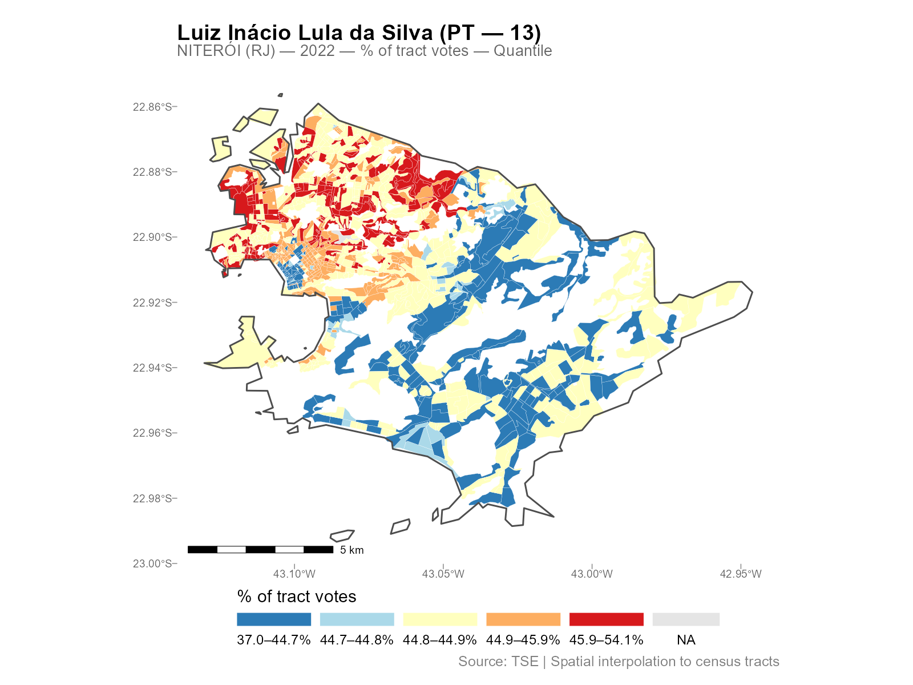
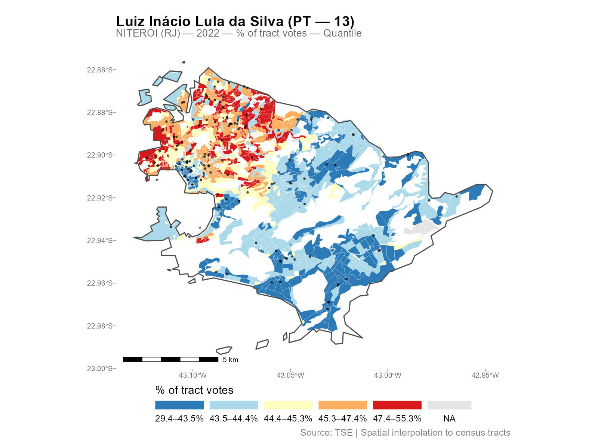
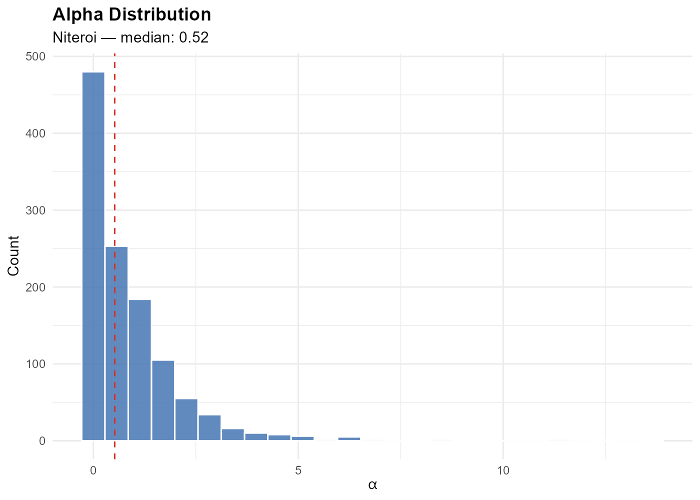
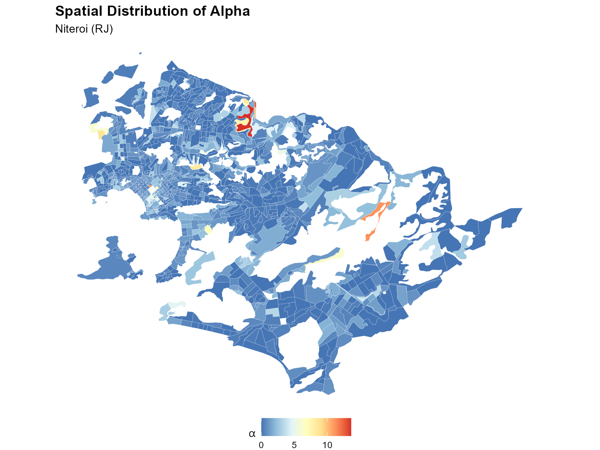
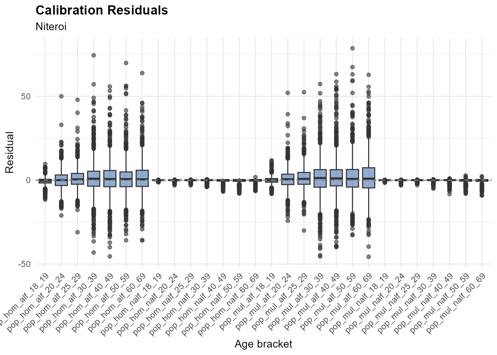

This vignette is a reference guide for working with
interpElections_result objects after interpolation. It
covers S3 methods, plotting options, residual analysis, validation, data
export, and areal aggregation. Examples use pre-computed results from
Niterói (RJ) (1,169 tracts, GPU) and Belo
Horizonte (MG) (5,113 tracts, GPU).
Loading Results
# Run the pipeline (these were computed with GPU)
result_nit <- interpolate_election_br(
"Niteroi", year = 2022, cargo = "presidente",
what = c("candidates", "parties", "turnout", "demographics"),
keep = "electoral_sf",
optim = optim_control(use_gpu = TRUE)
)
result_bh <- interpolate_election_br(
"Belo Horizonte", year = 2022, cargo = "presidente",
what = c("candidates", "turnout"),
keep = "electoral_sf",
optim = optim_control(use_gpu = TRUE)
)Print and Summary
The print() method gives a compact overview:
result_nitinterpElections result -- Brazilian election
Municipality: NITERÓI (RJ)
IBGE: 3303302 | TSE: 58653 | Election: 2022 | Census: 2022
Census tracts: 1169 | Sources: 135
Variables: 63
Candidates: 13 (CAND_27, CAND_14, CAND_30, CAND_13, ...)
Parties: 11 (PARTY_27, PARTY_14, PARTY_30, PARTY_13, ...)
Turnout: 1 (QT_COMPARECIMENTO)
Demographics: 10 (GENERO_FEMININO, GENERO_MASCULINO, ...)
Calibration: gender x 7 age brackets
Optimizer: pb_sgd_colnorm_cuda (obj = 1265038.68)
Alpha: [0.010, 17.623] (mean 2.507)The summary() method adds per-variable statistics
grouped by type:
summary(result_nit)The dictionary groups columns by type (candidate, party, turnout, demographics, calibration) with metadata like candidate name, party abbreviation, and ballot number:
View(result_nit$dictionary)Plotting
Single variable
plot(result_nit, variable = "Lula")
Variables can be referenced by:
-
Column name:
"CAND_13","PARTY_PT","QT_COMPARECIMENTO" -
Ballot number:
13,22 -
Candidate name (substring, case-insensitive):
"Lula","Bolsonaro" -
Party abbreviation:
"PT","PL"
Plot types
The type parameter controls the quantity mapped:
| Type | Description |
|---|---|
"pct_tract" |
% of total tract votes (default) |
"absolute" |
Raw interpolated count |
"pct_muni" |
% of municipality total |
"pct_valid" |
% of valid votes (excludes blank/null) |
"pct_eligible" |
% of eligible voters (requires turnout data) |
"density" |
Count per km2 |
Break methods
The breaks parameter controls the color scale:
-
"quantile"(default): equal-count bins -
"continuous": smooth gradient -
"jenks": natural breaks (requires classInt package) - Custom numeric vector:
breaks = c(0, 20, 40, 60, 80, 100)
Additional options
# Overlay polling stations
plot(result_nit, variable = "Lula", show_sources = TRUE)
# Zoom into a region (lon/lat bounding box)
plot(result_nit, variable = "Lula",
limits = c(-43.15, -43.05, -22.92, -22.86))
# Custom palette
plot(result_nit, variable = "Lula", palette = "viridis")
plot(result_nit, variable = "Lula", palette = "Spectral")
# Composable with ggplot2
library(ggplot2)
plot(result_nit, variable = "Lula") + theme_dark()
Interactive maps
# Opens in browser with hover tooltips and zoom
plot_interactive(result_nit, variable = "Lula")Extracting Alpha
The coef() method returns the optimized decay
parameters:

Map the alpha values spatially to see the urban/peripheral gradient:
result_nit$tracts_sf$alpha <- coef(result_nit)
ggplot(result_nit$tracts_sf) +
geom_sf(aes(fill = alpha), color = "white", linewidth = 0.05) +
scale_fill_distiller(palette = "RdYlBu", direction = -1) +
theme_void()
Interpretation: Low alpha (blue) = weight spread across many stations (dense urban areas). High alpha (red) = weight concentrated on the nearest station (periphery).
Residual Analysis
The residuals() method computes the calibration
residuals (fitted minus observed) for each tract and age bracket.
resid <- residuals(result_nit)
str(resid)
#> num [1:1169, 1:14] ...
# Per-bracket summary
colMeans(resid) # mean residual per bracket
sqrt(colMeans(resid^2)) # RMSE per bracket
Residuals should be centered near zero. Large residuals may indicate boundary effects (voters crossing municipality borders), data quality issues, or census/election year mismatches.
Validation Checklist
Five checks to apply to any result:
# 1. Total conservation: interpolated totals match source totals
colSums(result_nit$interpolated)[1:3]
colSums(result_nit$sources[, result_nit$interp_cols[1:3]])
# 2. Residual magnitude
resid <- residuals(result_nit)
sqrt(mean(resid^2)) # overall RMSE
# 3. Alpha distribution (no extreme piling at bounds)
summary(coef(result_nit))
# 4. Non-negative values
all(result_nit$interpolated >= -1e-10)
# 5. Convergence
result_nit$optimization$convergence # 0 = successExporting Results
# Plain data frame (no geometry)
df <- as.data.frame(result_nit)
write.csv(df, "niteroi_2022.csv", row.names = FALSE)
# GeoPackage with geometry (for GIS)
sf::st_write(result_nit$tracts_sf, "niteroi_2022.gpkg")
# Column metadata
result_nit$dictionary
# Source-level data (without geometry)
head(result_nit$sources)Areal Aggregation: From Tracts to Neighborhoods
Tract-level results can be reaggregated into larger zones
(neighborhoods, administrative regions, custom polygons) using
areal_weights() and areal_interpolate().
Example: Belo Horizonte tracts to neighborhoods
library(sf)
library(geobr)
# Download BH neighborhood boundaries
bairros <- read_neighborhood(year = 2010)
bairros <- bairros[bairros$code_muni == 3106200, ]
# Compute area-weighted intersection matrix
W_areal <- areal_weights(
target_sf = bairros,
source_sf = result_bh$tracts_sf,
target_id = "code_neighborhood",
source_id = "code_tract"
)
# Aggregate interpolated data
vote_data <- result_bh$interpolated
aggregated <- areal_interpolate(vote_data, W_areal)
# Conservation check
colSums(aggregated)[1:3]
colSums(vote_data)[1:3] # should matchThe weight matrix W_areal is
[n_neighborhoods x n_tracts]. Each column sums to 1 (each
tract’s data is distributed proportionally to the area overlap).
areal_interpolate() is simply
W_areal %*% data.
This approach preserves total conservation: the neighborhood-level totals equal the tract-level totals, which equal the original municipality totals.
The keep Parameter
Control which intermediate objects are retained in the result:
| Value | Object | Use case |
|---|---|---|
"weights" |
result$weights |
residuals(), manual reweighting |
"time_matrix" |
result$time_matrix |
residuals() (alternative), reuse |
"electoral_sf" |
result$electoral_sf |
plot(..., show_sources = TRUE) |
"pop_raster" |
result$pop_raster |
Inspect population density raster |
"rep_points" |
result$rep_points |
Inspect representative points |
weights and time_matrix are always kept by
default (needed for residuals() and
reinterpolate()). Use keep for additional
objects:
result <- interpolate_election_br("Niteroi", year = 2022,
keep = "electoral_sf")This also includes source point geometries for overlay plots.